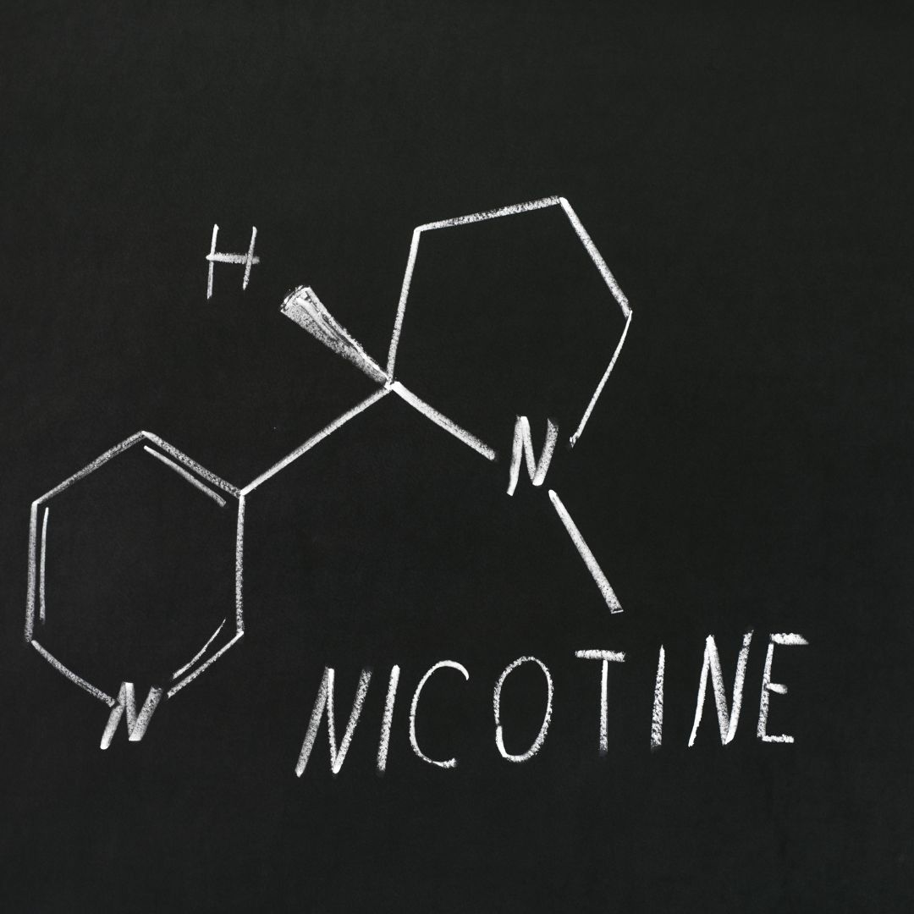

Nicotine is a widely discussed but often misunderstood substance.
It's commonly associated with smoking,
but its effects go beyond that.
In this blog post, we'll explore the dangers of nicotine and
what you need to know to make informed decisions about its use.

What is Nicotine?
Nicotine is a natural stimulant found in tobacco plants. It's a highly addictive substance that affects the nervous system. While it's most commonly consumed through smoking, it's also present in other products like smokeless tobacco and e-cigarettes.
Nicotine Replacement Therapy (NRT):
For those looking to quit smoking or reduce their nicotine intake, various forms of nicotine replacement therapy (NRT) are available, including nicotine patches, gum, and lozenges. These products can help manage withdrawal symptoms during the quitting process.
The Importance of Quitting:
Quitting nicotine can be one of the best decisions for your long-term health. It's never too late to quit, and there are resources and support systems available to help individuals kick the habit.
Understanding the dangers of nicotine is crucial for making informed decisions about its use. Whether you're a current smoker looking to quit or someone looking to educate themselves about the risks, knowing the facts about nicotine is the first step towards a healthier lifestyle.